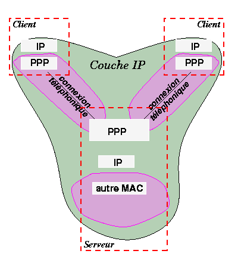

La couche PPP est une couche MAC, qui peut être utilisée en dessous d'une couche IP.

PPP contient plusieurs services qui utilisent PPP qui encapsule les diverses PDU pour qu'elles puissent être transmises sur le ligne téléphonique.
PPP est spécifié dans les RFC 1661
| Option | valeurs |
|---|---|
| MRU (Unité réception maximale) | 128..1500, recommandé : 296 (40+256) |
| Protocole d'authentification | rien, PAP, CHAP |
| Protocole Qualité | rien, LQR (Link Quality Report) |
| Nombres magiques (pour détecter des liaisons rebouclées et d'autres anomalies au niveau Liaison de Données) |
|
| Compression du champ protocole | ces options concernent le format des PDU-LCP |
| Compression des champs adresse et contrôle | |
| IPCP | pour IP (le plus utilisé) |
| IPXCP | pour IPX |
| ATCP | pour Appletalk |
| OSINLCP | pour OSI |